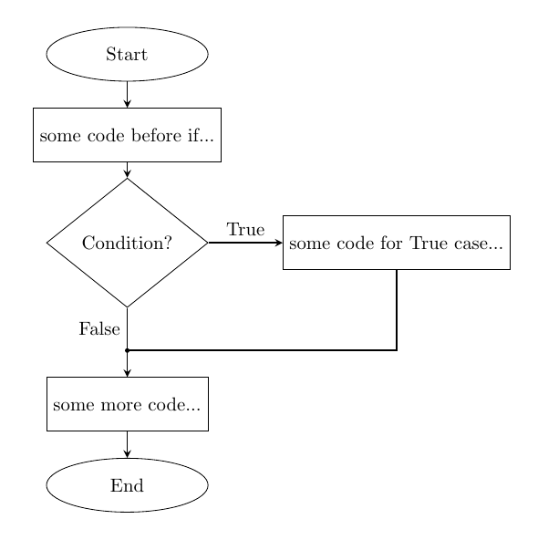
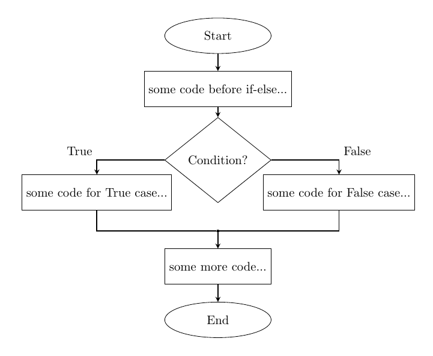
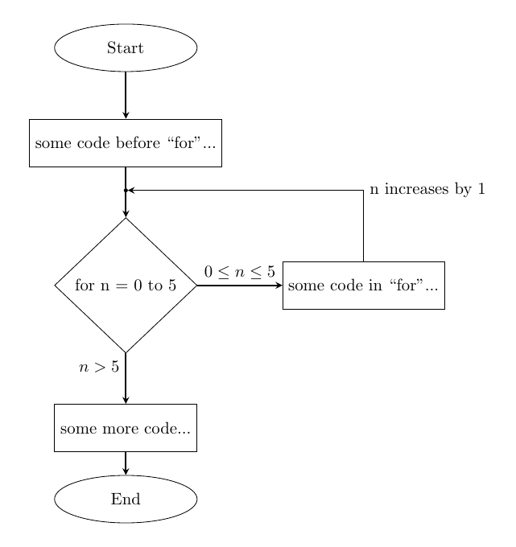
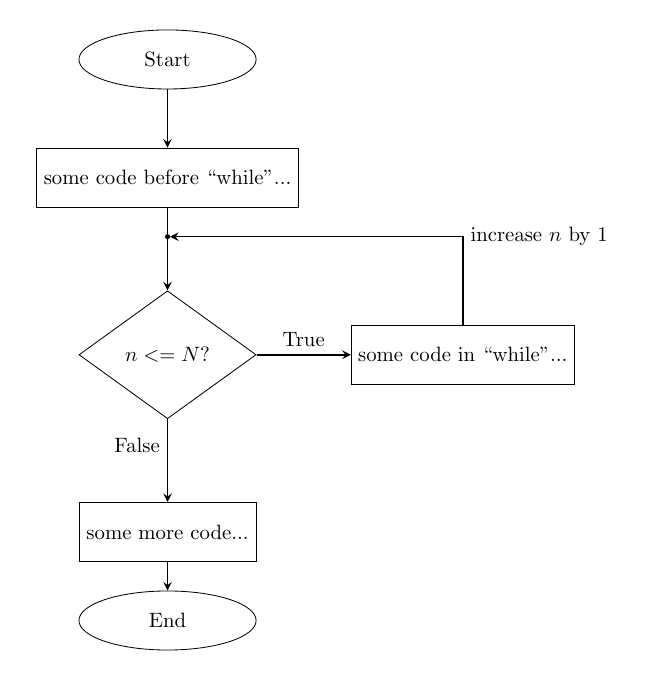
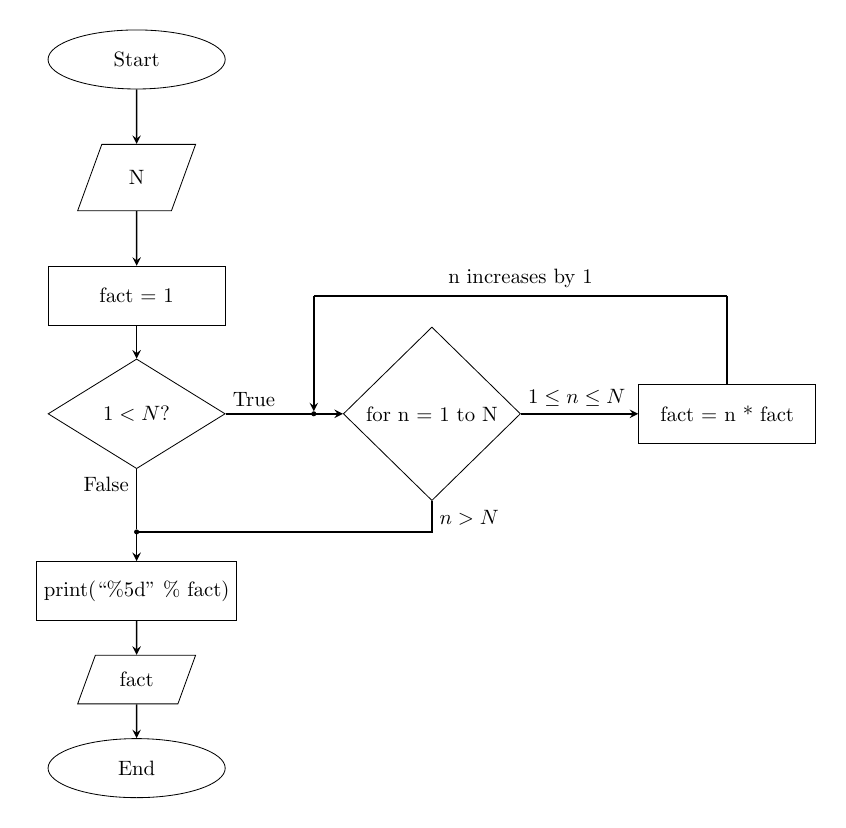
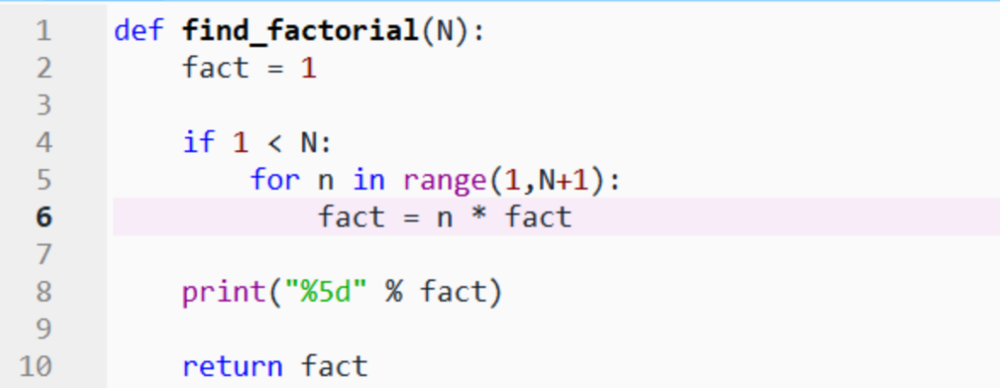
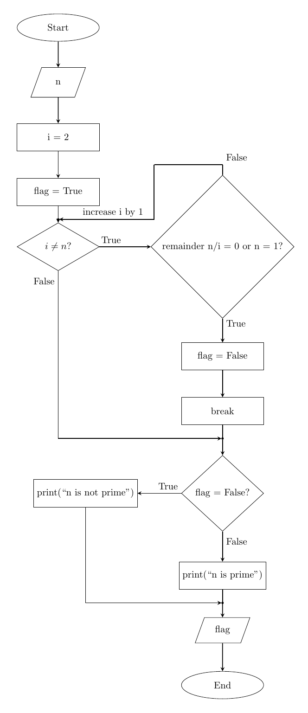
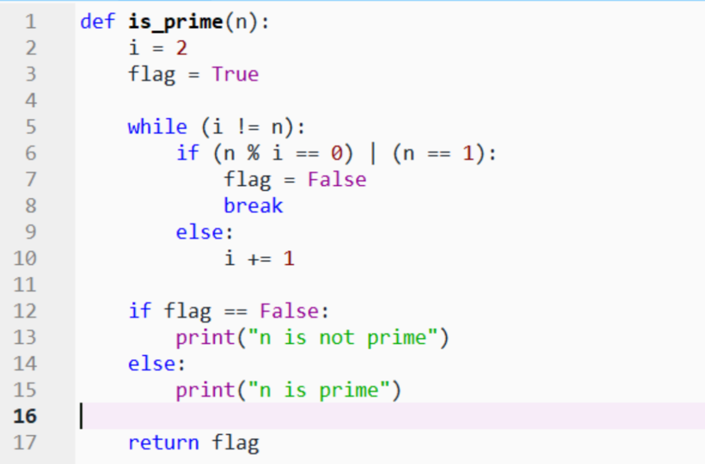

An algorithm can be represented with two methods



https://problemsolvingwithpython.com/09-Loops/09.04-Flowcharts-Describing-Loops/





Check the below resources:
https://student.cs.uwaterloo.ca/~cs231/resources/pseudocode.pdf
https://pseudocode.deepjain.com/guides/if/